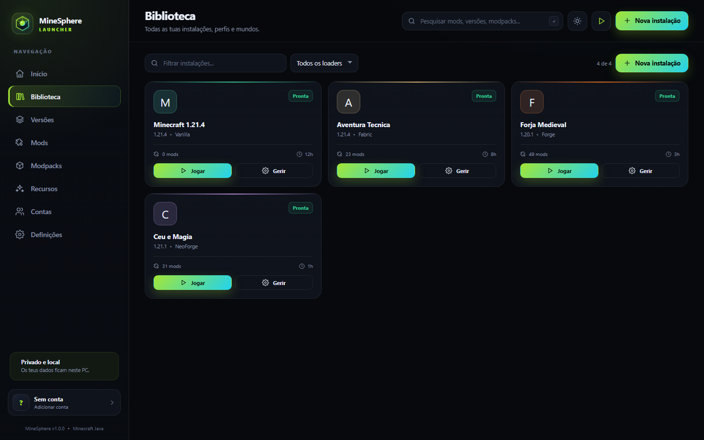
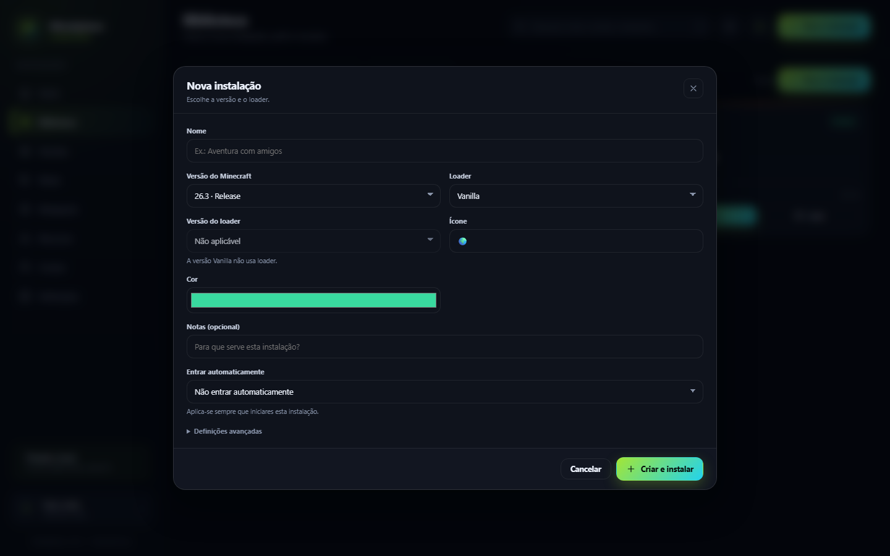
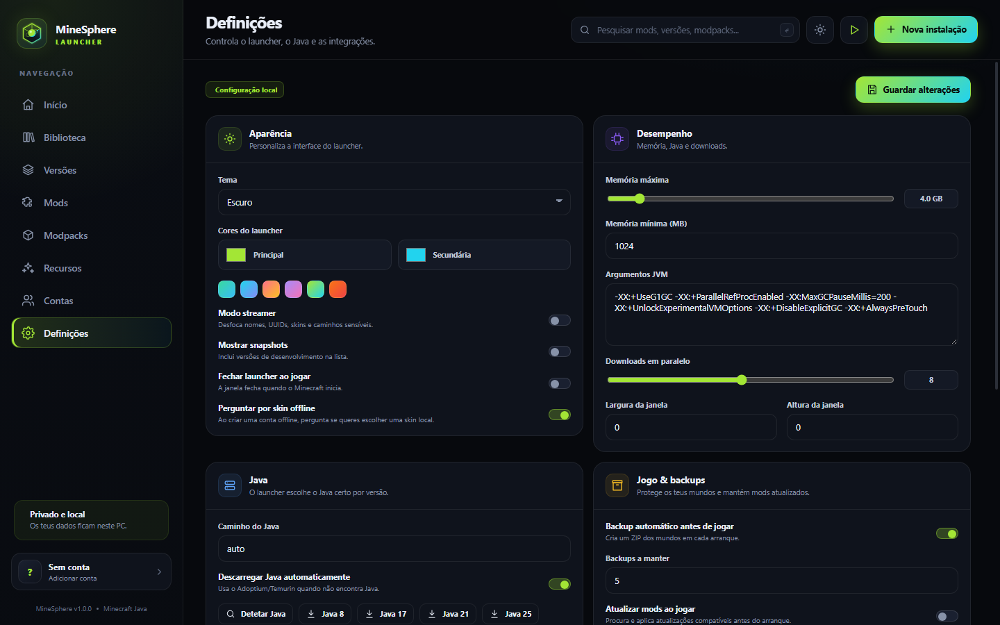

Contas Microsoft e offline
Login Microsoft por device code e perfis offline com UUID determinístico. As tuas credenciais ficam no teu PC.
Open Source · Windows · Minecraft Java
Contas, skins, loaders, mods, modpacks, backups e Java automático. Um launcher local, rápido e open source — sem instalar Node.js.
Grátis, MIT e feito com Node.js puro. Não afiliado com a Microsoft ou a Mojang.
Tudo incluído
Sem instalar dependências, sem contas em serviços de terceiros e sem sair do launcher.
Login Microsoft por device code e perfis offline com UUID determinístico. As tuas credenciais ficam no teu PC.
Envia skins para contas Microsoft ou usa skins offline com sincronização opcional para CustomSkinLoader.
Vanilla, Fabric, Quilt, Forge e NeoForge, com instalação e reparação a partir do manifesto oficial.
Pesquisa e instala mods do Modrinth, CurseForge e releases do GitHub. Importa e exporta modpacks.
Backups automáticos e manuais dos mundos, restauro, capturas de ecrã e gestão de ficheiros por instância.
Deteta o Java instalado e descarrega Adoptium/Temurin quando é preciso — Java 8, 17, 21 ou 25.
Entra diretamente num servidor ou abre um mundo ao iniciar. Configuração guardada por instância.
Tema claro ou escuro, cores à escolha, modo streamer, resolução, memória e argumentos JVM por instância.
Por dentro
Uma interface pensada para ter tudo à mão. Clica numa imagem para ampliar.



Começar
O MineSphere foi feito para funcionar sem instalação complicada. Descarrega, extrai e abre o start.bat.
O código-fonte completo, incluindo o start.bat e as ferramentas.
Podes usar qualquer pasta, desde que tenhas permissão de escrita.
start.batNa primeira vez, o launcher descarrega um runtime Node.js portátil e verifica o SHA-256.
Escolhe Microsoft ou offline, cria uma instalação e prime Jogar.
Open Source
O código está disponível sob a licença MIT. Podes explorar, aprender, reportar problemas ou contribuir com melhorias. O projeto não tem dependências externas e foi escrito em Node.js puro.
{
"name": "MineSphere Launcher",
"license": "MIT",
"language": "Node.js",
"dependencies": 0,
"platform": "Windows 10/11",
"source": "github.com/MundumIgnotum"
}O MineSphere Launcher não é afiliado, associado, autorizado ou patrocinado pela Microsoft Corporation ou pela Mojang Studios. Minecraft é uma marca registada da Mojang Studios. Este projeto é apenas uma aplicação open source e não inclui assets, texturas, sons ou código proprietário do jogo. Para jogar, precisas de uma conta Minecraft legítima.